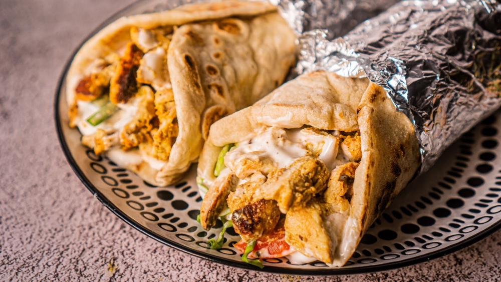

Shaworma

Shaorma de pui facuta in casa este foarte gustoasa, usor de pregatit, cu carne aromata, frageda si suculenta, insotita de verdeturi, cartofi prajiti si sosuri.
Shaorma de pui este unul din cele mai populare preparate de fast food din lume, iar reteta acesteia dateaza inca din secolul al XVIII-lea sau al XIX-lea si se pare ca provine din impreiul otoman. Iniatial a fost facuta cu carne de miel.
Este un aliment de baza in Orientul Mijlociu, dar este cunoscut pe tot mapamodul. Shawrama este denumirea arabeasca ce inseamna ” intoarce”, facandu-se referire la blocul de carne care se roteste pentru a se gati la gratar.
In Orientul Mijlociu toppingurile includ tahini, sos de usturoi (toum), salata tabouleh, fattoush, rosii si castraveti proaspeti sau murati.
Variantele originale de shaorma de pui nu contineau maioneza si cartofi prajiti.
Ingredients
- 600 g piept de pui
- 250 g iaurt gros
- 2 lingurite pasta de rosii
- 50 ml ulei
- 1 lingura suc lamaie
- 1/2 lingura otet de vin rosu
- 1 lingurita sare
- 1/2 lingurita piper
- 1/2 lingurita condiment 7 piper
- 1 lingurita pudra de usturoi
- 1 lingurita turmeric
- 1/2 linguria pudra de scortisoara
- 1/2 lingurita pudra de cardamon
- 1 lingurita chimion
- 1 lingurita pudra de ghimbir
- 1 lingura varfuita boia dulce
Steps
- Am pregatit pentru inceput marinata. Intr-un bol am pus iaurtul. Peste acesta am pus pasta de rosii, uleiul, sucul de lamaie si otetul de vin rosu.
Am adaugat apoi toate condimentele pe care le-am enumerat in lista de ingrediente. Daca va lispeste unul dintre ele nu este o problema, marinata va iese buna, dar se pierde putin din aroma pe care am cautat sa o aduc retetei.
- Am amestecat foarte bine, pana s-a omogenizat compozitia.
Am pus pe rand bucatile de piept de pui ce au o grosime de aproximativ 1 cm in marinata si le-am imbracat cu aceasta pana cand au fost bine acoperite.
- Am acoperit bolul cu o folie alimentara si l-am pus in frigider pentru minim 4 ore, apoi l-am scos si l-am lasat la temperatura camerei o ora.
Inainte sa pun carnea pe gratar am pus cartofii la prajit, astfel incat sa fie gata toate in acelasi timp.
- Am prajit pieptul de pui pe o plita de fonta incinsa foarte bine. Am lasat o parte din marinata pe carne.
- Dupa ce le-am prajit pe ambele parti le-am scos si le-am lasat 5 minute sa se odihneasca. Intre timp am amestecat sosul de maioneza cu ketchup si am incalzit lipiile.
Am taiat pieptul de pui in fasii subtiri.
- Am uns lipia cu sosul de maioneza roz, am presarat salata verde tocata, apoi am pus felii de ceapa rosie, carne, castraveti murati, ardei iute, felii de rosii, cartofi prajiti si sos de usturoi.
- Am impachetat shaorma, am pus-o in hartie, dar puteti folosi si o foaie de staniol.
Reteta Jamila